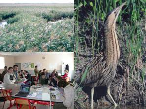

|
ButorStar, un jeu de rôles sur les usages multiples des roselières
R. Mathevet , C. Le Page, M. Etienne, G. Lefebvre
S. Proréol, B. Poulin, G. Gigot, A. Mauchamp
 Ce
jeu de rôles a été conçu pour sensibiliser les étudiants
à la conservation de l'avifaune et à l'usage rationnel et raisonné des
roselières, mais il est également destiné à fournir le support d'une réflexion
collective aux usagers pour une gestion durable de leur roselière.
Motivation de la création
Ce jeu de rôles appelé ButorStar est développé dans le cadre du projet
Life-Nature, destiné à améliorer la gestion des roselières (massifs à
Phragmites australis) pour la conservation du Butor étoilé (Botaurus stellaris),
héron vulnérable à l'échelle européenne. Les objectifs sont de favoriser
progressivement au travers du jeu de rôle la prise de conscience (1) des
interdépendances biologiques et hydrologiques et de leurs dynamiques à
différentes échelles spatio-temporelles, (2) des aspects technico-économiques
et socioculturels des différents usages des roselières, (3) de l'intérêt
et des limites de la concertation et de la négociation pour la gestion
des espaces naturels non protégés par des mesures réglementaires.
Description et spécificités
Un modèle multi-agents, développé sur la plateforme CORMAS, permet de
simuler les effets à court et long terme de la gestion d'une roselière
résultant des décisions prises par des éleveurs, récoltants de roseau,
pêcheurs, chasseurs et naturalistes. Ce model repose sur une représentation
spatiale d'une zone humide archétype constituée d'un paysage virtuel divisé
en deux propriétés, l'une privée, l'autre communale, toutes deux interdépendantes
d'un point de vue hydrologique. Chaque propriété est divisée en huit unités
de gestion. Celles-ci peuvent être endiguées par les joueurs (2 à 12)
s'ils souhaitent s'affranchir des contraintes hydrauliques du voisinage.
Cinq profils saisonniers de gestion de l'eau sont proposés aux joueurs,
plusieurs étant plus particulièrement adaptés à un usage de la zone humide.
Les décisions d'utilisation du sol et de gestion de l'eau sont prises
par les joueurs au niveau de la zone humide, de la propriété et des unités
de gestion. Ces décisions sont le résultat d'une négociation entre les
joueurs. Elles sont intégrées dans le modèle par le maître de jeu. Leurs
effets sur les gains des joueurs, l'occupation du sol (par exemple passage
de la roselière à la prairie, la forêt ou l'eau libre), sur la présence
et la distribution spatiale de la faune sont simulés par l'ordinateur.
Mise en uvre
Une vingtaine de tests ont eu lieu avec différents publics : étudiants
(BTS, Masters et écoles d'ingénieur), chefs de projets de conservation
de la nature, scientifiques et gestionnaires d'espaces naturels protégés.
Deux tests auront prochainement lieu avec des usagers des zones humides.
Références
- Mathevet R., Le Page C., Etienne M., Gigot G., Lefebvre G., Poulin
B., Mauchamp A. (2005). ButorStar: a role-playing game for collective
awareness of reedbed wise use. In Prep.
Pour en savoir plus, contactez
l'auteur.
|
|